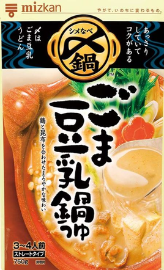
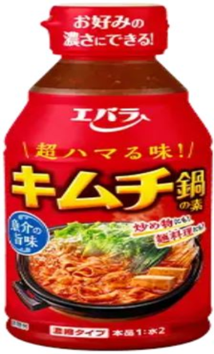
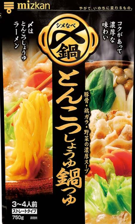
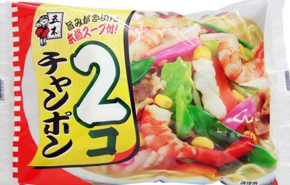

Yummy
-Evaluation of Nabe Soup Base and Evaluation of Nabe Soup Base×Ingredients-
- ■Evaluation Criteria (*Would I recommend it to my past self? That’s super important)
- 5.0 God
- 4.5 I’d absolutely recommend it to my past self. I definitely want to eat it again.
- 4.0 I’d recommend it to my past self. I want to eat it again.
- ----------------------------------The 4.0 Wall ↑ Beyond the high bar of just being pretty good, do I want to eat it again?"
- 3.5 Pretty good.
- 3.0 Normal.
- 2.0 Not tasty.
- 1.0 Terrible.
- ■Three Secret Rules for Enjoying Hot Pot Deliciously
- ① Green onion, cabbage (or Chinese cabbage), and tofu are the holy trinity. Simple, essential, and the best combo. Bad meat can ruin the taste—try it once without meat first.
- ② Smaller ingredients taste better. Try cutting them a bit finer.
- ③ When eating, put down your phone and turn off the TV. Focus on the food and relax. Eating alone is highly recommended too.
- Akakara (Ichibiki)

- Sesame Soy Milk Hot Pot Soup Base (Mizkan)

- Sundubu Jjigae (S&B)

- Kimchi Hot Pot Soup Base (Ebara)

- Sundubu Jjigae Soup Base (Marudai Foods)

- Lovers Spicy Delicious Sauce (Mizkan)

- Chicken Broth Umashio 7 Pack (Ajinomoto)

- Pork Bone Soy Sauce (Mizkan)

- Pork Miso Chanko Hot Pot Soup (Ichibiki)

- Gifu Tanmen Supervised Salt Tanmen Hot Pot Soup
(Sugakiya)
- Local Chicken Broth Salt Hot Pot Soup (Yamaki)

- Petit Hot Pot Tantan Sesame Hot Pot 40g×4 pcs
(Ebara)
- Grilled Flying Fish Broth Hot Pot Soup (Mizkan)

- SUGAKIYA Japanese-style Tonkotsu Hot Pot Soup (Sugakiya)

- Samgyetang Soup Base (S&B)

- Kimchi Hot Pot Soup Base (Ichibiki)

- Yosenabe Soup Base (Ichibiki)

- Sesame Soy Milk Hot Pot Soup (Mizkan)（4pac）

- Akakara (Mizkan)
(4 small packs included)
- Champon (Itsuki Foods)

- Champon (kano japan)

- Kimuchi Nabe(Mizkan)

- ★★★★⋆ (4.5)
- ★★★★ (4.0)
- ★★★⋆ (3.5)
- ★★★⋆ (3.5)
- ★★★⋆ (3.5)
- ★★★⋆ (3.5)
* If using the best method for Abura-soba
then 4.0
- ★ (1.0)
- ★★★⋆ (3.5)
- ★★★⋆ (3.5)
- ★★★⋆ (3.5)
* Under review. Could be 4.0
- ★★★⋆ (3.5)
- ★★ (2.0)
- ★★★⋆ (3.5)
- ★★★⋆ (3.5)
- ★★★⋆ (3.5)
- ★★★ (3.0)
- ★★★⋆ (3.5)
- ★★★★ (4.0)
- ★★★★⋆（4.5）
- —
※ With seafood added and cooked my own way → ★★★★ (4.0)
- —
※ With seafood added→ ★★★⋆（3.5）
- ★★★⋆ (3.5)
-
Green onion × Cabbage × Tofu
→★★★★⋆ (4.5)
× Add Yakisoba
→★★★★ (4.0)
× Add Udon
→★★★★ (4.0) * Might be 4.5. Under review.
-
Green onion × Cabbage × Tofu
→★★★★ (4.0)
-
Green onion × Cabbage × Tofu
→★★★⋆ (3.5)
× Add Raw Egg
→★★★⋆ (3.5)
-
Green onion × Tofu
→★★★⋆ (3.5)
Add Yakisoba
→★★★⋆ (3.5)
-
Tofu
→★★★⋆ (3.5)
Add Yakisoba
→★★★⋆ (3.5)
-
Green onion × Tofu
→★★★⋆ (3.5)
Add Yakisoba
→★★★★ (4.0 * If using the best method)
-
Green onion × Tofu
→★ (1.0)
Rice Porridge (Add Rice)
→★★ (2.0) * Initial taste was 3.5
-
Green onion × Cabbage × Tofu
→★★★⋆ (3.5)
Add Yakisoba
→★★★⋆ (3.5)
-
Green onion × Enoki mushrooms
→★★★⋆ (3.5)
Rice Porridge (Add Rice)
→★★★⋆ (3.5) * Might be 4.0 next time. Under review.
-
Green onion × Tofu × Chinese cabbage
→★★★⋆ (3.5) * Might be 4.0 next time. Under review.
Add Udon
→★★★⋆ (3.5)
-
Tofu × Chinese cabbage
→★★★⋆ (3.5)
Add Yakisoba
→★★★⋆ (3.5)
-
Green onion × Udon
→★★ (2.0)
-
Green onions × Tofu × Cabbage × Shimeji mushrooms
→ ★★★⋆ (3.5)
Udon noodles added
→ ★★★ (3.0)
-
Green onions × Tofu × Cabbage
→ ★★★⋆ (3.5)
Add Yakisoba
→★★★⋆ (3.5)
-
Green Onion × Tofu
→ ★★★⋆ (3.5)
Add rice to make Gukbap (Korean rice soup)
→ ★★★⋆ (3.5)
- Tofu × Shimeji mushrooms
→ ★★★ (3.0)
Add rice to make gukbap (Korean rice soup)
→ ★★★ (3.0)
-
Tofu × Green Onion × Shimeji Mushrooms
→ ★★★⋆ (3.5) *Possibly 4.0, under review
Rice Porridge (Zosui)
→ ★★★⋆ (3.5) *Possibly 4.0, under review
-
Tofu × Green Onion
→ ★★★★ (4.0)
Tofu only
→ ★★★★ (4.0) *Tofu × Green Onion is tastier, though both are 4.0
Rice Porridge (Tofu × Green Onion)
→ ★★★★ (4.0)
Tofu × Green Onion × Yakisoba
→ ★★★⋆ (3.5)
-
Tofu × Green Onion (Spicy Level 5)
→ ★★★★⋆ (4.5)
Added rice to make Gukbap (Spicy Level 5)
→ ★★★★⋆ (4.5)
Yakisoba × Tofu × Green Onion (Spicy Level 5)
→ ★★★★ (4.0)
Udon × Green Onion × Shimeji (Spicy Level 5)
→ ★★★★ (4.0)
-
Seafood × Oil _ Small Pot (Futomi Shoji – Value Seafood Mix)
※ Instead of a frying pan, add oil to a small pot and put in the seafood. Let it cook/steam gently.
→ ★★★★ (4.0)
-
Seafood × Oil _ Small Pot (Futomi Shoji – Value Seafood Mix)
→ ★★★⋆ (3.5)
-
Tofu×Yakisoba
→ ★★★⋆ (3.5)
- Seriously damn delicious!!!
I would highly recommend this to my past self. The best spicy flavor so far.
The super simple combo of green onion, cabbage, and tofu is perfect. Chinese cabbage works as a substitute for cabbage.
If you add about 30 yen worth of yakisoba noodles, somehow it turns into ramen and tastes insanely good.
- Tasty.
I can recommend this to my past self.
A comforting flavor. Recommended when feeling down.
A reassuring taste. Makes me want to buy it again.
- Pretty good.
I think it tastes better without adding raw egg.
- Pretty good.
The ratio of soup base to water is 1:2.
The base contains 300ml, and you add 600ml water, so you get a large 900ml serving.
- Pretty good.
It said “No.1” on it, but it’s Pretty good, nothing more.
- astes great when eaten as oil noodles.
Using the best method, it scores 4.0.
Really delicious.
The best way is to cut green onions, add 50ml of liquid and 100ml water, then add yakisoba noodles and Wait until all the soup has evaporated.
As a hot pot, it’s Pretty good.
- The worst ever.
The smell is unbearable.
It kills the appetite.
The smell even comes back when eating hot pot.
The end.
- Pretty good.
- Pretty good.
The rice porridge might reach 4.0 next time I try it.
Needs further review.
I haven’t tried adding pork belly yet, so I might buy it again.
- This might be a hit.
I’ll order again.
Needs further review.
It was rated 3.5, but might be 4.0 next time.
Definitely felt the vegetables were tasty!
- Pretty good.
- Not tasty.
The smell is also bad.
The cubes themselves might be bad.
- pretty good. Adding udon noodles makes the flavor strange. The clear soup becomes cloudy. The package’s back recommends ochazuke, so udon doesn't seem to be a good match.
- It's pretty good. The ramen with yakisoba added might be rated 4.0. Under review.
-
Such a mysterious product. At first, no matter how many bites I take, it’s a 3.0.
But when I add green onion and tofu to the hot pot soup base and finish the whole thing, I’m like, “Huh? Wait… this is a 3.5.” Then, “Hmm… I might actually buy this again.”
Usually with hot pot soup bases, there’s a moment when they give off an unpleasant taste, but with this one, there’s absolutely none of that. Amazing. Seriously, that’s impressive.
There really aren’t products like this. It’s almost like it’s asking me, “Is your sense of taste okay? You always go for strong flavors, but can you appreciate mine?”
Feels like it’s throwing me a challenge. Such an interesting product.
- normal.
-
good. Could very well be a 4.0. Definitely close to 4.0. Whether it’s truly a 4.0 (something I can recommend to my past self and would want to eat again) is still under review. I’ll probably buy this again. The rice porridge was also tasty. There’s a huge gap between 3.5 (tasty, nothing special) and 4.0 (want to eat again), and this might just cross that line. For now, I’ll give it a 3.5.
-
When I put tofu and green onion in the hot pot, it was super tasty!! 4.0 (The hot pot with tofu only is already a 4.0, but adding green onion makes it an even better 4.0). The rice porridge with tofu, green onion, egg, and rice is also 4.0. So good!!! I’ll definitely make that porridge again. The ramen with yakisoba noodles was 3.5. It was tasty, but maybe the yakisoba noodles didn’t match well.
-
Seriously, insanely delicious!!! Pure genius.
I could totally recommend this to my past self. Love that it comes in small packs.
Super simple, but green onion × tofu is the best. So good!! Absolutely amazing.
udon and yakisoba is good.※5 spicy degree
-
This is the ultimate way to cook it. No need to bother washing a frying pan—just use a small pot.
Pour in oil (a decent amount, not too little—better a bit more). Then throw in the seafood.
Be sure to cover it with a lid and let it gently cook/steam.
After that, add 300 ml of water, bring it to a boil, add the seasoning powder, bring to a boil again, then add the noodles and eat in 2 minutes.
Champon × My Ingredients × My Cooking Style = ★★★★ (4.0).
The key is the amount of oil and the steaming. When I used way less oil, it wasn’t as good as the ultimate method.
Seriously delicious!! Tastes like it could end wars!!! The soup is amazing. I’ll keep an eye on Itsuki Foods.
- pretty good.
- pretty good.
- On 25/5/9, 25/5/11, and 25/5/12, ate one packet for the 1st time.
On 25/7/7 and 25/7/8, ate one packet for the 2nd time.
*All products counted from 25/5/7.
- On 25/5/7 and 25/5/8, ate one packet (1st time).
- On 25/5/14, ate one packet (1st time).
- On 25/5/16, 25/5/17, 25/5/18, 25/5/21, and 25/5/22, ate one bottle (300ml base) (1st time).
- On 25/6/5 and 25/6/6, ate one packet (1st time).
- On 25/6/12, 25/6/16, 25/6/17, 25/6/18, and 25/6/20, ate one packet (1st time).
- On 25/6/20, used 2 cubes (1st time - don’t want to eat any more, so finished).
- On 25/6/23 and 25/6/24, ate for the 1st time. Ate again on 25/7/4 (2nd time).
- On 25/7/1 and 25/7/3, ate one packet (1st time).
- On 25/7/8 and 25/7/9, ate one packet (1st time).
- On 25/7/9, ate one packet (1st time).
- On 25/7/16, used one cube (1st time - don’t want to eat any more, so finished).
- Used one pouch on 25/7/21 (1st time)
- Used one pack on 25/8/3、25/8/5 (first time)
- Used one whole pack on 2025/8/9 (1st time)
- Used 400ml on 25/8/12 and 320ml on 25/8/13 to finish one packet (1st time)
- Ate on 25/8/15 and 25/8/16, finished one pack. (Soup Base: First use)
- On 25/8/19, ate 1 pack (out of 4 small packs). On 25/8/28, used 1 pack (2 packs left). On 25/8/30 and 8/31, used 1 pack. On 25/9/1, used the last pack (1st round: finished all 4 packs).
- Ate using 2 packs on 25/9/3 and 25/9/4.Used one pack on 25/9/4.Used one pack on 25/9/5 and 25/9/6(1st time)
-
(* Came up with this after making it about three times myself)
From here, I’ll count 9/5/25 as the first try. (1st time)
- I ate one pack on 25/9/10 (first time).
- I ate one pack on 25/9/11 (first time).